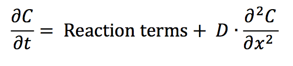

The conundrum of phosphorylation status of PleC and DivK in the predivisional cell
Progression through the Caulobacter cell cycle is dictated by the phosphorylation status of two proteins, DivK and CtrA. These two proteins are response regulators at the termini of two phosphotransfer modules (DivJ-PleC-DivK and DivL-CckA-CtrA) (Figure 3.1 A). PleC and CckA are bifunctional histidine- modifying enzymes that may act as either kinases or phosphatases [1,2]. Both PleC and DivJ can phosphorylate DivK, while the role of DivL is to up-regulate CckA's kinase activity [3]. (DivL is tyrosine kinase, but its kinase activity is not involved in the up-regulation of CckA [3]; how DivL promotes CckA activity is still unknown.) DivK~P binds to and inhibits DivL [4]. In a swarmer cell, DivJ is absent, PleC is a phosphatase, and DivK is unphosphorylated. Consequently, DivL is actively up-regulating CckA kinase activity [5], which in turn maintains CtrA in its phosphorylated form, thereby inhibiting DNA replication in the swarmer cell [6]. The introduction of DivJ during the swarmer-to-stalked transition enables the phosphorylation of DivK~P, triggering a pathway that culminates in the dephosphorylation of CtrA~P in stalked cells [7-9]. Therefore, at the molecular level, swarmer and stalked cells can be distinguished based on which response regulator-CtrA or DivK is phosphorylated.
The schematic in Figure 3.1 A suggests that DivK and CtrA cannot be concurrently phosphorylated during the cell cycle. Therefore, it is surprising that both response regulators are phosphorylated in predivisional cells (Figure 3.1 B). While the level of DivK~P remains fairly constant in the stalked and predivisional stages [10], CtrA~P level changes sharply from lowest in the stalked cell stage to peak activity in the predivisional stage [2,11]. Recent experimental observations [4,5] favor a model where DivL is active (up-regulating CckA kinase) in the predivisional Caulobacter cell. Hence, DivL, inactivated by DivK~P during the swarmer-to-stalked transition, appears to be reactivated in the predivisional cell, despite the continuing presence of DivK~P. It is unclear how the inhibitory interaction between DivK~P and DivL that is required for swarmer-to-stalked transition early in the cell cycle is circumvented in the predivisional stage of the cell cycle.

Figure 3.1: Both DivK and CtrA are phosphorylated during the predivisional stage of the Caulobacter cell cycle. (A) Influence diagram of two signal transduction pathways in C. crescentus. Barbed arrows indicate activation, while the blunt-headed line indicates inhibition. (B) Spatiotemporal distributions of DivK~P (red) and CtrA~P (light blue).
Contrasting models of PleC function
Of the informal models, the first (in support of PleC kinase) is necessary to explain stalk formation, while the second (in favor of PleC phosphatase) posits conditions that are to be satisfied for replicative asymmetry. While the first model lays out the evolution of PleC function during the course of the cell cycle, the second model only addresses the plausible function of PleC in the predivisional cell. Since PleC-dependent phosphorylation of PleD is required for the development of the stalk, it is fair to assume that PleC is a kinase in the stalked cell. Hence, the difference in the two models can be narrowed down to the suggested function of PleC at the new pole of the predivisional cell (Figure 3.2).
Figure 3.2: Two scenarios for the function of PleC (kinase or phosphatase) in the early predivisional (PD) cell. Spatiotemporal dynamics of PleC (green) and DivL (dark blue) during the cell cycle under these two scenarios.
Method
Our reaction-diffusion model is based on the mechanism proposed in our earlier paper [17]. The proteins under investigation show non-homogeneous distributions along the long axis of a Caulobacter cell; hence, we consider it sufficient to formulate the model for one spatial dimension. The governing partial differential equation (PDE) for a generic chemical species takes the form:

where C(x,t) is the concentration of species C at location x and time t. The PDEs on which we base our explorations are provided in Table B.1. By discretizing the spatial dimension into n = 100 compartments of equal length h = L/n, where L is the total length of the Caulobacter cell and using a central difference scheme to approximate the Laplacian operator, we convert each PDE into a set of ordinary differential equations (ODEs). In our notation, Ci is the concentration of species C in compartment i where

A complete understanding of the mechanism behind localization of DivJ, PleC, DivL and CckA is lacking at this stage, and our model does not attempt to offer one. We enforce the localization of these four kinases based on experimentally observed distributions in wild-type and mutant cells [8,11,12,13,14]. We do this by defining rates of binding and unbinding of species C to docking proteins in compartment i as follows:

where pi is an indicator function that takes the value of 1 or 0, Cib is the concentration of the localized form and Cif is the concentration of the freely diffusing form of a generic protein in compartment i of the cell.
The full set of ODEs were simulated in MATLAB using the ode15s solver [15]. The spatiotemporal distribution plots in the figures were generated using the python library Matplotlib [16]. The colors indicate the concentration gradient from zero (blue) to the maximum value of protein concentration (red) during the cell cycle. A disadvantage of such a plot is that a shallow gradient can be interpreted as significant changes in protein activity and localization. On the other hand, a very steep gradient can result in underestimation of fluctuations in protein activity and localization occurring at the lower range of concentration values. To avoid these problems and to make comparison between wild-type and mutant simulations more convenient, the color bar for each simulation indicates the concentration gradient from zero (blue) to maximum wild-type concentration Cwt_max (red).
Reference
- Paul R, Jaeger T, Abel S, Wiederkehr I, Folcher M, et al. (2008) Allosteric regulation of histidine kinases by their cognate response regulator determines cell fate. Cell 133: 452- 461.
- Chen YE, Tsokos CG, Biondi EG, Perchuk BS, Laub MT (2009) Dynamics of two Phosphorelays controlling cell cycle progression in Caulobacter crescentus. J Bacteriol 191: 7417-7429.
- Reisinger SJ, Huntwork S, Viollier PH, Ryan KR (2007) DivL Performs Critical Cell Cycle Functions in Caulobacter crescentus Independent of Kinase Activity. J Bacteriol 189: 8308-8320.
- Tsokos CG, Perchuk BS, Laub MT (2011) A dynamic complex of signaling proteins uses polar localization to regulate cell fate asymmetry in Caulobacter crescentus. Dev Cell 20: 329-341.
- Chen YE, Tropini C, Jonas K, Tsokos CG, Huang KC, et al. (2011) Spatial gradient of protein phosphorylation underlies replicative asymmetry in a bacterium. Proc Natl Acad Sci U S A 108: 1052-1057.
- Quon KC, Yang B, Domian IJ, Shapiro L, Marczynski GT (1998) Negative control of bacterial DNA replication by a cell cycle regulatory protein that binds at the chromosome origin. Proc Natl Acad Sci U S A 95: 120-125.
- Siegal-Gaskins D, Crosson S (2008) Tightly Regulated and Heritable Division Control in Single Bacterial Cells. Biophys J 95: 2063-2072.
- Radhakrishnan SK, Thanbichler M, Viollier PH (2008) The dynamic interplay between a cell fate determinant and a lysozyme homolog drives the asymmetric division cycle of Caulobacter crescentus. Genes Dev 22: 212-225.
- Lin Y, Crosson S, Scherer NF (2010) Single-gene tuning of Caulobacter cell cycle period and noise, swarming motility, and surface adhesion. Mol Syst Biol 6: 445.
- Jacobs C, Hung D, Shapiro L (2001) Dynamic localization of a cytoplasmic signal transduction response regulator controls morphogenesis during the Caulobacter cell cycle. Proc Natl Acad Sci U S A 98: 4095-4100.
- Angelastro PS, Sliusarenko O, Jacobs-Wagner C (2010) Polar localization of the CckA histidine kinase and cell cycle periodicity of the essential master regulator CtrA in Caulobacter crescentus. J Bacteriol 192: 539-552.
- Iniesta AA, Hillson NJ, Shapiro L (2010) Polar Remodeling and Histidine Kinase Activation, Which Is Essential for Caulobacter cell Cycle Progression, Are Dependent on DNA Replication Initiation. J Bacteriol 192: 3893-3902.
- Lam H, Matroule J-Y, Jacobs-Wagner C (2003) The asymmetric spatial distribution of bacterial signal transduction proteins coordinates cell cycle events. Dev Cell 5: 149-159.
- Wheeler RT, Shapiro L (1999) Differential localization of two histidine kinases controlling bacterial cell differentiation. Mol Cell 4: 683-694.
- Shampine LF, Reichelt MW (1997) The MATLAB ODE Suite. SIAM J Sci Comput 18: 1-22.
- Hunter JD (2007) Matplotlib: A 2D Graphics Environment. Comput Sci Eng 9: 90-95.
- Biondi EG, Reisinger SJ, Skerker JM, Arif M, Perchuk BS, et al. (2006) Regulation of the bacterial cell cycle by an integrated genetic circuit. Nature 444: 899-904.
 webmaster
webmaster